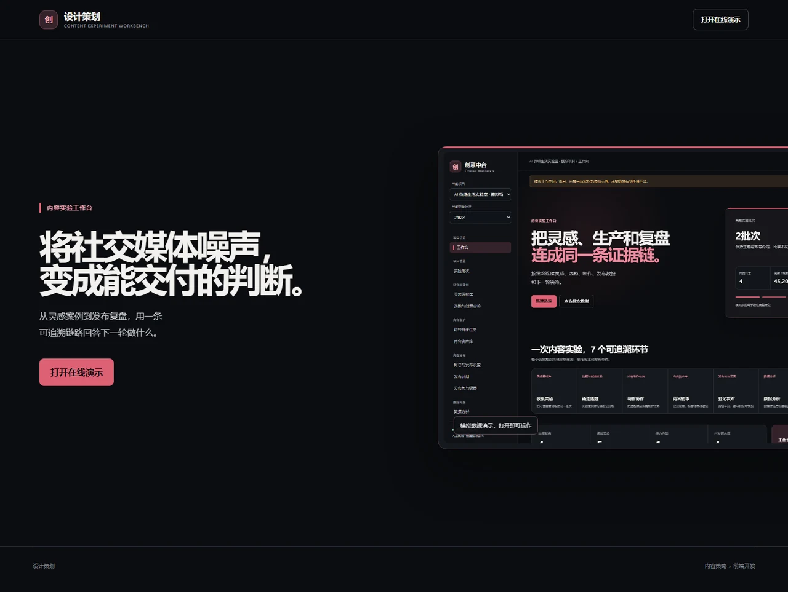

产品设计 / 全栈原型 / 内容运营工作流
创意内容实验与复盘工作台
把社媒灵感、制作任务和发布表现连成可追溯链路，帮助内容团队用批次数据决定下一轮保留什么、验证什么。

业务问题
内容团队的参考案例、策划判断、制作文件和发布数据分散在不同位置。缺少统一关联时，很难追溯一个选题借鉴了哪些案例、用了哪些创意要素，也难以把发布表现变成下一轮可执行的判断。
创意视频灵感
收集社媒视频案例，拆解内容结构与创意要素，再通过标签检索复用，为选题实验提供可追溯的灵感来源。
左右滑动查看图中细节，也可打开完整图。
我的做法
我先梳理策划、制作、初审、发布和复盘中的角色交接，再把灵感、选题、任务、资产、发布快照和指标组织为一条数据链，用可操作的原型检查流程能否从灵感走到下一轮行动。
工作流程
从灵感到下一轮决策
- 收集与策划。按批次登记小红书、抖音案例及人工拆解结果；一个选题可关联多个案例，并写明受众、假设和测试变量。
- 制作与初审。选题转为有负责人和交付日期的任务；登记外部制作文件的版本与链接，记录初审意见。
- 发布与数据。人工登记发布账号、内容编号及标签快照，录入发布后 72 小时的阅读／播放、互动和关注指标。
- 比较与复盘。按批次、平台、形式和标签查看样本表现，记录事实、判断、保留项和下一轮唯一变量；AI 仅在人工发起时辅助分析。
我的个人贡献
我负责业务流程与数据对象设计，推动多案例关联、贯穿全流程的标签和发布快照，并根据反馈迭代字段、批次切换、BI 与复盘交互；与 AI 编程助手协作实现前后端原型，完成 GitHub、Render 部署及线上验证。
设计取舍
标签连接创意与数据，不直接证明因果
标签字典包含 12 个父类、67 个子标签，并贯穿案例、选题、内容资产和发布快照。同一内容可进入多个标签组，因此标签组数据不能相加；排行用于描述样本、提出假设，不直接归因于某个标签。
技术与验证边界
原型使用 Node.js 原生 HTTP 服务、SQLite 和原生 HTML／CSS／JavaScript，提供表单、标签管理、批次 BI、复盘和 CSV 导出。平台采集、自动发布、真实文件存储和多人权限尚未实现。
线上演示包含 2 个批次、8 条人工编写的模拟内容，用于验证交互和数据链路，不代表真实账号运营效果，也不能证明业务增长。